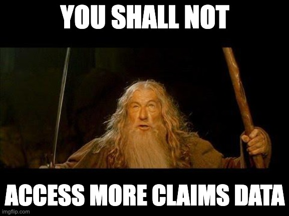

The last few years have seen a dramatic increase in the number of organizations delivering and enabling value-based care. This in turn has led to an increase in the availability of healthcare claims data, as claims data is often shared across organizations participating in value-based contracts. As a result, more organizations are looking for smart ways to manage their claims data.
A claims data platform is designed to do just that: aggregate, harmonize, and analyze claims datasets. Building a claims data platform is complex because it requires specialized knowledge about how to manage a bunch of idiosyncratic data issues specific to claims.
Recently, I’ve had a number of people ask me for advice about building a claims data platform. I’ve built a number of claims data platforms over the years for payers, ACOs, and tech companies. And I’ve made a ton of mistakes and learned a lot in the process.
This blog post covers the key things to consider when building a claims data platform. We also discuss how we solve some of these problems at Tuva. Hopefully you’ll be able to avoid some of the mistakes we’ve made in the past by thinking these things through up front.
In particular we discuss the following:
- Technology Stack
- Data Acquisition
- Adjustments, Denials, and Reversals
- Data Quality
- Common Data Model
- Groupers
- Measures
- Risk Models
Technology Stack
The tech stack you choose has nothing specifically to do with claims data, but is essential nonetheless. I’ll share my opinion here but the truth is that it’s hard to go wrong with the options available today - as long as you keep it simple. Any cloud vendor is fine and there are only a few key components:
- SFTP
- Cloud Storage
- Data Warehouse
- Data Transformation
- Data Visualization
I’ll share a few brief comments on each one.
SFTP: It doesn’t particularly matter what software you use. Just know that claims data is commonly transmitted as flat files (e.g. CSV, tab delimited, fixed-width, etc.) and payers and health plans are used to sharing the files via SFTP.
Cloud Storage: This is basic storage for files that is accessible as part of any public cloud subscription e.g. AWS S3, Google Cloud Storage, Azure Blob Storage, etc. This is where you’ll store the files after they arrive via SFTP. You may also be able to convince your claims data provider to upload files directly to cloud storage.
Data Warehouse: As of this writing, 3 data warehouses are the most popular: Snowflake, Databricks, and Google Bigquery. There are many, many others, but if you’re unsure what to choose I highly advise you don’t over-think it and go with one of these three. We primarily use Snowflake at Tuva. It’s incredibly simple to use and surprisingly cheap - our total bill was only a few hundred dollars per month for the first couple years and even now that we’ve grown quite a bit we’re only up to $10-15,000 per year.
Data Transformation: Here the answer is easier: dbt.
Data Visualization: Again, there are many options, with a couple leading the pack: Power BI, Tableau, and Looker. At Tuva we primarily use Power BI. Choose whichever tool you’re familiar with and your team has experience with.
You can find endless articles detailing the pros and cons of each of these options, so I won’t spend any more time on them here.
Data Acquisition
Getting payers, health plans, and employers (not to mention brokers and TPAs) to share the right claims data with you is surprisingly tricky. Ideally you get it right the first time and avoid extensive back and forth that can easily drag on for months.

It’s common for data providers to only share a subset of available data based on what they feel is necessary or important. It’s on you to pushback and negotiate when you don’t get the fields that you need. And this is difficult to do without a granular understanding of which fields are required for which use cases.
For example, is bill_type_code important? Which use cases (e.g. metrics) can’t I pursue if I don’t get this field? These are the types of questions you’ll need to think through and be able to answer.
It’s a good practice to provide a data dictionary to your data provider to let them know the data you’re looking for. If you’re planning to use Tuva can you share the data dictionary for the Tuva Input Layer. It’s a pretty standard, normal looking claims data model. In certain cases the data provider will send you the data already in this format.
Adjustments, Denials, and Reversals
It’s common for claims to be adjusted, denied, or reversed if there was a problem with how the claim was originally submitted. For most analytics use cases you want to deal with final action claims and not any of these intermediary claims. If you don’t have a method for identifying and flagging adjustments, denials, and reversals it can throw off your analytics.
We provide a longer discussion of claim adjustments, denials, and reversals, including tips for how to identify them here. However to briefly summarize there are two approaches you should take.
First, ask your claims data provider how you should identify these intermediary claims in the dataset they give you. Payers and health plans are often good about providing this info. However, in our experience it’s usually only accurate 25% of the time.
Second, if you weren’t able to get any info from the payer or health plan, or if the info they provided wasn’t accurate, then you have to figure it out yourself. This boils down to figuring out which claims are related based on dates, member IDs, claim IDs, paid amounts, etc. Our guide in the link above can provide some helpful tricks for how to do this.
Data Quality
If this is your first time working with claims data I have some unfornate news for you: Your claims data is going to have significant data quality problems that will impact the answers you derive from it. How significant they are is the question.
There are two types of things you will want to analyze from a data quality standpoint. First, you’ll want to assess what I call “atomic-level” data quality issues. These are issues that occur when the raw data doesn’t look like it should. Examples of atomic-level data quality problems include:
- bill_type_code is missing on a line of an institutional claim (every institutional claim line should have a bill_type_code)
- bill_type_code is invalid (there are only certain values it should take)
- bill_type_code is duplicated (there should be one and only one per institutional claim)
There are hundreds of checks like this that are specific to claims that you will want to check for.
Second, you’ll want to analyze the impact of data quality issues on use cases. For example, if there is a problem with bill_type_code that will impact the definition of acute inpatient visits, which will impact metrics like length of stay, readmission rate, and mortality.
We’ve built this sort of analytics in a product we call Data Quality Intelligence as an add-on to the open-source.
Common Data Model
If you’re acquiring claims data from multiple data partners these datasets are likely (i.e. pretty much guaranteed) to be in completely different formats. In order to run your analytics using one code base you’ll need to harmonize the different formats into a common data model.
Here are the main things you’ll want to consider when choosing a common data model:
- Mapping
- Use Cases
- Customization
Mapping: You’ll want to make sure that your data model is easy to map claims data sources to. Mapping means transforming data from one data model into another. How similar your data model is to the data sources you get from your data partners determines how easy it is to map data. Do you have separate medical claims and pharmacy claims tables, or just one claims table? Do you separate header and line information into separate tables? Is enrollment represented as spans or member months?
Use Cases: Some common data models are designed for specific types of analytics. For example, the OMOP common data model is designed with clinical research use cases in mind. You’ll want to make sure the data model you choose powers the use cases you care about.
Customization: You are going to have use cases that are somewhat to unique to your organization. There is no perfect data model. Make sure you choose a data model that you’re able to modify to meet your unique needs.
The Core Data Model is the common data model in Tuva. It’s designed for both claims and clinical data sources and use cases.
Groupers
Claims data is made up of hundreds of thousands of codes representing conditions, services, procedures, medical devices, drugs, facilities, providers, etc. It’s very difficult to analyze information that is high-cardinality like this.
Groupers have been around for decades solving this problem. As you might guess, groupers “group” claims into higher-level categories, making them easier to analyze. There are a couple of groupers that are really important for analyzing claims data.
- Service Categories
- Encounters
- Conditions
- Procedures
Service Categories: Service categories group claims into higher-level categories related to the type of service the claim was related to. For example, was the claim inpatient, outpatient, or an office visit? Very often service categories are used to stratify spend and utilization.
Encounters: It’s very common for certain types of visits (especially inpatient) to be billed as multiple claims, one for the facility and one for the physician. In order to perform analysis at the visit level, these claims must be grouped together. Encounter Types is where claims are grouped into encounters in Tuva.
Conditions: ICD-10-CM codes make up the conditions in claims data. That’s more than 70,000 distinct codes. In order to efficiently analyze different patient populations you need to group these codes into higher-level disease categories e.g. type 2 diabetes, chronic kidney disease, atrial fibrillation, etc.
Procedures: Similar to conditions there are thousands of ICD-10-PCS and HCPCS codes describing surgical procedures and other types of services delivered to patients and to do any type of meaningful analysis you need to consolidate these.
Measures
There are a few types of measures that are considered “table stakes” for value-based care analytics, meaning essentially everyone needs them. These are:
- Spend and Utilization
- Quality Measures
- Acute Events
Spend and Utilization: Analyzing the cost and volume of care delivered to your patient population is likely one of your key analytics use cases. Most often these metrics are normalized for the enrolled population, i.e. calculated on a per-member-per-month or PMPM basis. Service categories are commonly used in this type of analysis to allow for drill-down into categories that may be accountable for large or above benchmark increases in spend and utilization.
Quality Measures: Quality Measures are almost always part of value-based contracts. There are hundreds of measures, maintained by different organizations, and updated on different schedules. Each measure includes logic and value sets to calculate it.
Acute Events: The hallmark of value-based care is moving care that can be provided in lower acuity settings (e.g. urgent care) out of the hospital. Therefore being able to analyze events like acute inpatient and emergency department visits and their related metrics, e.g. readmissions and potentially preventable events, is extremely important.
Risk Models
Risk adjustment and risk stratification models are also considered “table stakes” for value-based care analytics. These are two related but different concepts:
Risk adjustment: Allows you to adjust for differences in your patient population, e.g. age, gender, health status, disease burden, so that you can trend, compare, and benchmark metrics over time. Think of risk adjustment as enabling “apples to apples” analytics.
Risk stratification: Allows you to predict events that are going to happen in the future, e.g. which patients are at high-risk for a hospitalization or death.
The are a number of publicly available risk models, include CMS-HCCs, which are part of Tuva. There are also a large number of proprietary risk models.
Conclusion
Hopefully the discussion above was helpful and you learned something. Or if you have a better way to think about it I would love to talk to you. But there is one final piece of advice that is most important which I’ll leave you with.
The most common failure-mode I see is a ton of time and effort spent setting up technology and transforming data that doesn’t result in the generation of important insights. Often this is because the people setting up the technology and transforming the data are disconnected from the data analysts actually trying to answer the questions. To avoid this do the following:
Write down your most use cases and be specific. For example, we want to analyze these 10 quality measures (list them) and want to flag patients that are in the denominator but not the numerator (i.e. have a care gap).
From each use case, work backwards to identify the data tables and columns that are needed to do the analysis. In the example above, is there a data table that calculates the quality measure performance by measure and another data table at the patient grain that includes the patients that meet denominator criteria but not numerator?
Work backwards from the analysis-ready data tables to determine the raw claims data elements that are needed to do the analysis.
If you spend the time following this exercise and build your data platform accordingly, I pretty much guarantee you’ll avoid wasting time and resources building a claims data platform no one uses and everyone hates :-)